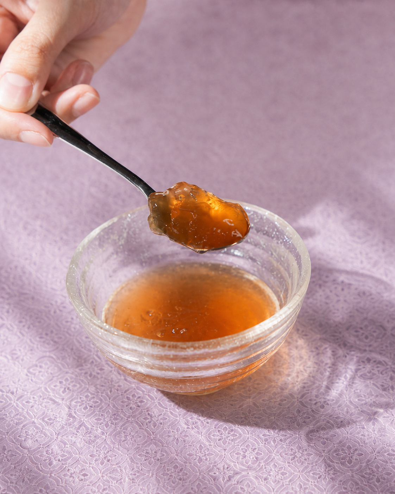
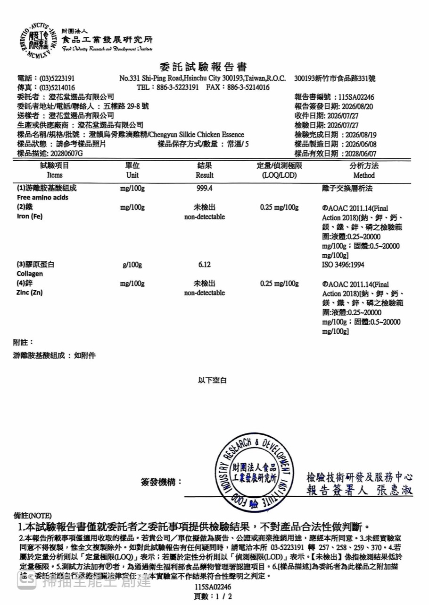
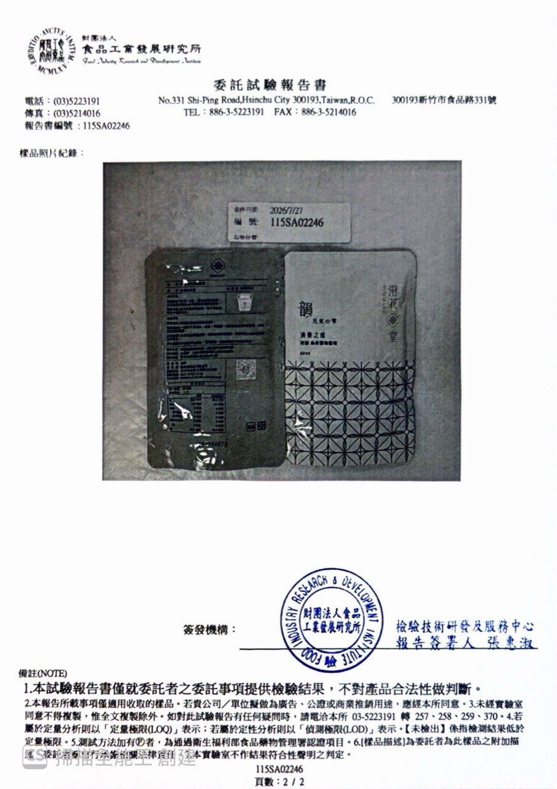
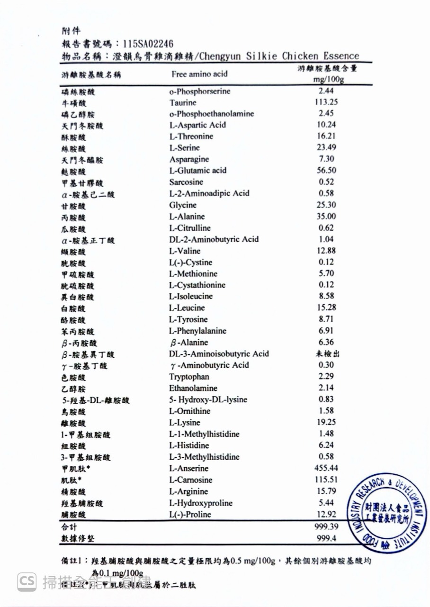

Traditional Extraction
A slow extraction process with no water added.
A slow extraction process with no water added.
Taiwanese Silkie chicken is the only ingredient.
| Energy | 23.3 kcal |
|---|---|
| Protein | 5.8 g |
| Fat | 0 g |
| Sodium | 54.5 mg |
Package nutrition values and tested-sample results may differ. Please refer to the actual package label.
Chengyun is made with Silkie chicken, selected for its distinctive flavor and texture.

Texture can change naturally with temperature.
Refer to the product label for ingredients and nutrition information.
Food-safety management guides every pouch.
Managed from ingredients through finished goods.
A controlled process supports storage stability.
SGS + FIRDI
Independent testing offers a closer look at Chengyun’s composition and quality.
FIRDI · 115SA02246
Carnosine and anserine are notable natural dipeptides found in chicken. Alongside a range of amino acids, they reveal Chengyun’s composition.
All amounts below are shown per 100 g.
Anserine
455.44 mg / 100 g
A natural dipeptide in chicken, and a methylated form of carnosine.
Carnosine
115.51 mg / 100 g
A natural dipeptide formed from beta-alanine and histidine.
Total free amino acids
999.4 mg / 100 g
Report total; the individual results add up to 999.39 mg/100 g.
Collagen
6.12 g / 100 g
Reported test result
BCAA three-item total
36.74 mg / 100 g
Valine, isoleucine, and leucine added together; not a separate FIRDI test item.
Taurine
113.25 mg / 100 g
Iron
Not detected
Zinc
Not detected
Research on carnosine and anserine explores their antioxidant and pH-buffering properties.
Ingredient properties are research background, not evidence of this product’s effects. Ingredient Research
BCAA adds the three amino acid results below.
| Test item | Result | Unit |
|---|---|---|
| L-Valine | 12.88 | mg/100 g |
| L-Isoleucine | 8.58 | mg/100 g |
| L-Leucine | 15.28 | mg/100 g |
| Three-item total | 36.74 | mg/100 g |
The attachment lists 38 free amino acid and related components.
| Component | Result |
|---|---|
| o-Phosphoserine | 2.44 |
| Taurine | 113.25 |
| o-Phosphoethanolamine | 2.45 |
| L-Aspartic Acid | 10.24 |
| L-Threonine | 16.21 |
| L-Serine | 23.49 |
| Asparagine | 7.30 |
| L-Glutamic Acid | 56.50 |
| Sarcosine | 0.52 |
| L-2-Aminoadipic Acid | 0.58 |
| Glycine | 25.30 |
| L-Alanine | 35.00 |
| L-Citrulline | 0.62 |
| DL-2-Aminobutyric Acid | 1.04 |
| L-Valine | 12.88 |
| L-Cystine | 0.12 |
| L-Methionine | 5.70 |
| L-Cystathionine | 0.12 |
| L-Isoleucine | 8.58 |
| L-Leucine | 15.28 |
| L-Tyrosine | 8.71 |
| L-Phenylalanine | 6.91 |
| β-Alanine | 6.36 |
| DL-3-Aminoisobutyric Acid | Not detected |
| γ-Aminobutyric Acid | 0.30 |
| Tryptophan | 2.29 |
| Ethanolamine | 2.14 |
| 5-Hydroxy-DL-lysine | 0.83 |
| L-Ornithine | 1.58 |
| L-Lysine | 19.25 |
| L-1-Methylhistidine | 1.48 |
| L-Histidine | 6.24 |
| L-3-Methylhistidine | 0.58 |
| L-Anserine | 455.44 |
| L-Carnosine | 115.51 |
| L-Arginine | 15.79 |
| L-Hydroxyproline | 5.44 |
| L-Proline | 12.92 |
Individual results add up to 999.39 mg/100 g; the report total is 999.4 mg/100 g. N.D. means below the quantification limit.
Iron and zinc were not detected (below the quantification limit). Other heavy metals were not tested in this report.
| Test item | Result | Unit | Method |
|---|---|---|---|
| Total free amino acids | 999.4 | mg/100 g | Ion-exchange chromatography |
| Iron | Not detected | mg/100 g | AOAC 2011.14 |
| Collagen | 6.12 | g/100 g | ISO 3496:1994 |
| Zinc | Not detected | mg/100 g | AOAC 2011.14 |
Complete report and amino acid attachment. Select an image to enlarge.



SGS · Quality Testing
A clear view of nutrition and food safety, down to the details.
Per 60 mL pouch, calculated from tested values.
Protein
≈ 4.8 g / 60 mL
Calculated from 8.0 g/100 mL
Fat
Not detected
Sugars
Not detected
Energy
≈ 19.2 kcal / 60 mL
Calculated from 32.0 kcal/100 mL
Sodium
≈ 57.2 mg / 60 mL
Calculated from 95.3 mg/100 mL
Tested result per 100 g.
Cholesterol
Not detected
Quality made visible through measured results.
48
Not detected
All 48 items: not detected
9
Not detected
All 9 items: not detected
3
Negative
S. aureus, coliforms, and Salmonella
4
Not detected
Arsenic, lead, cadmium, and mercury
Nutrition test results per 100 mL.
| Test item | Result | Unit |
|---|---|---|
| Energy | 32.0 | kcal/100mL |
| Protein | 8.0 | g/100mL |
| Fat | Not detected | g/100mL |
| Sum of saturated fat | Not detected | g/100mL |
| Sum of trans fat | Not detected | g/100mL |
| Carbohydrate | 0.0 | g/100mL |
| Sugars | Not detected | g/100mL |
| Moisture | 93.4 | g/100mL |
| Ash | 0.8 | g/100mL |
| Sodium | 95.3 | mg/100mL |
Per-pouch values are estimates calculated from the test results. Please refer to the package for nutrition information.
These are selected results. Please see the original report for every test item.
All 48 veterinary drug residues: not detected.
BBP, DBP, DIBP, DEP, DMP, DEHP, DNOP, DINP, and DIDP: not detected.
| Test item | Result | Report number |
|---|---|---|
| Staphylococcus aureus | Negative | ABA26903111 |
| Coliforms | Negative | ABA26903111 |
| Salmonella | Negative | ABA26903111 |
| Arsenic (As) | Not detected | ABA26903113 |
| Lead (Pb) | Not detected | ABA26903113 |
| Cadmium (Cd) | Not detected | ABA26903113 |
| Mercury (Hg) | Not detected | ABA26903113 |
| Cholesterol | Not detected | ABA26903114 |
Complete reports · English PDF
Purine Report | Awaiting Publication
SGS · ABA26803557
SGS tested 18 amino acids in Chengyun Silkie Chicken Essence, showing the amount of each one.
From protein building blocks to umami, each amino acid has a distinct role.
Glycine
12,795 ppm (mg/kg)
One of the amino acids that make up collagen.
Glutamic Acid
7,402 ppm (mg/kg)
A protein building block and a key source of umami.
Proline
7,085 ppm (mg/kg)
A collagen building block with a distinctive ring structure.
Alanine
5,569 ppm (mg/kg)
One of the amino acids that make up proteins.
Arginine
4,757 ppm (mg/kg)
One of the amino acids that make up proteins.
BCAA three-item total
4,234 mg/kg · 423.4 mg/100 g
Isoleucine, leucine, and valine added together; not a separate SGS test item.
Total of 18 items
54,702 mg/kg · 5,470.2 mg/100 g
The 18 results added together; not a separate SGS test item.
Results for 18 amino acids in ppm (mg/kg).
| Test item | Result | Unit |
|---|---|---|
| Alanine | 5,569 | ppm (mg/kg) |
| Arginine | 4,757 | ppm (mg/kg) |
| Aspartic Acid | 3,424 | ppm (mg/kg) |
| Cystine | 72 | ppm (mg/kg) |
| Glutamic Acid | 7,402 | ppm (mg/kg) |
| Glycine | 12,795 | ppm (mg/kg) |
| Histidine | 1,492 | ppm (mg/kg) |
| Isoleucine | 948 | ppm (mg/kg) |
| Leucine | 1,943 | ppm (mg/kg) |
| Lysine | 2,282 | ppm (mg/kg) |
| Methionine | 871 | ppm (mg/kg) |
| Phenylalanine | 1,283 | ppm (mg/kg) |
| Proline | 7,085 | ppm (mg/kg) |
| Serine | 1,629 | ppm (mg/kg) |
| Threonine | 1,305 | ppm (mg/kg) |
| Tyrosine | 430 | ppm (mg/kg) |
| Valine | 1,343 | ppm (mg/kg) |
| Tryptophan | 72 | ppm (mg/kg) |
Alanine through valine (17 items): SGS SOP TESP-VC-0040, referring to AOAC 994.12. Tryptophan: SGS SOP TESP-VC-0087, referring to AOAC 988.15.
Ingredient properties are research background, not evidence of this product’s effects. Ingredient Research
Three selected papers introduce the overall evidence, ingredient background, and human research findings and limitations.
These studies did not test Chengyun Silkie Chicken Essence. Formulations, doses, and participants differ; their findings cannot establish the same effects for this product.
Research topic: A systematic review and meta-analysis of chicken essence and cognitive function.
Summary — Some executive-function analyses were positive, but limited study quality and inconsistent findings leave insufficient convincing evidence to establish cognitive benefits.
Nutrients, 8(1):57. DOI: 10.3390/nu8010057
Read the paperResearch topic: A review of imidazole dipeptides and fatigue research.
Summary — Introduces carnosine and anserine and discusses two human studies related to fatigue. This is early background literature, not a complete account of current evidence.
Japanese Journal of Complementary and Alternative Medicine, 6(3):123–129. DOI: 10.1625/jcam.6.123
Read the paperResearch topic: Repeated chicken essence intake and cognitive performance after mental fatigue.
Summary — Twenty healthy men took part in a placebo-controlled crossover trial. At weeks 1 and 4, reaction times after the post-fatigue rest period were shorter than at baseline; those before and immediately after the fatigue task were unchanged. Placebo showed no comparable significant change, but this alone does not establish superiority over placebo or identify a responsible ingredient.
Medical Science Monitor, 19:540–547. DOI: 10.12659/MSM.883971
Read the paper